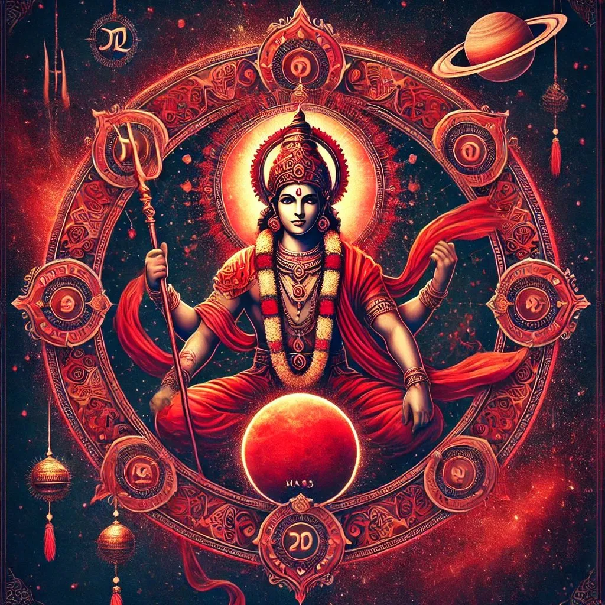
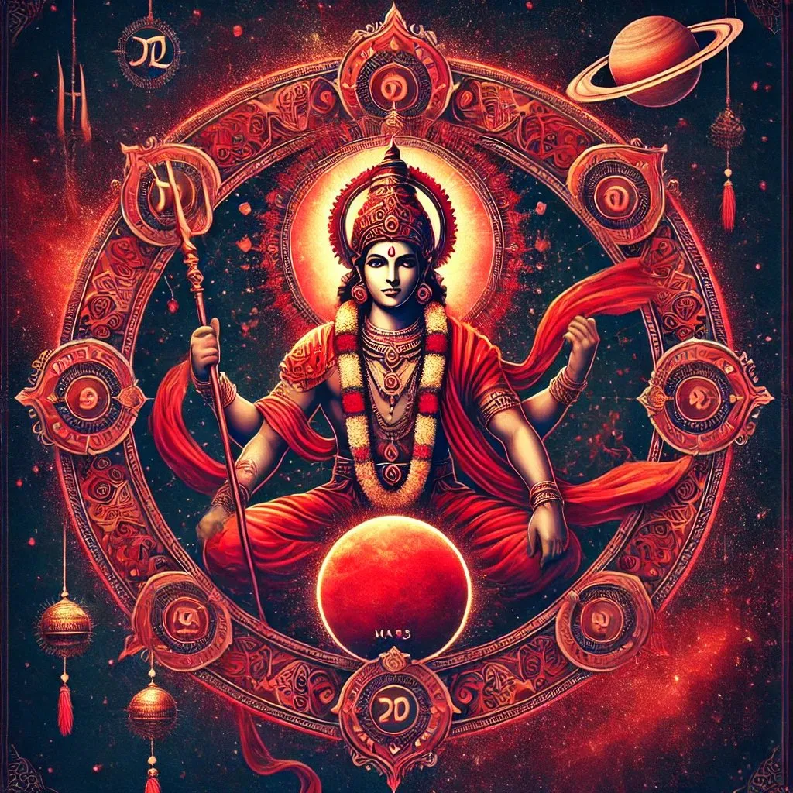
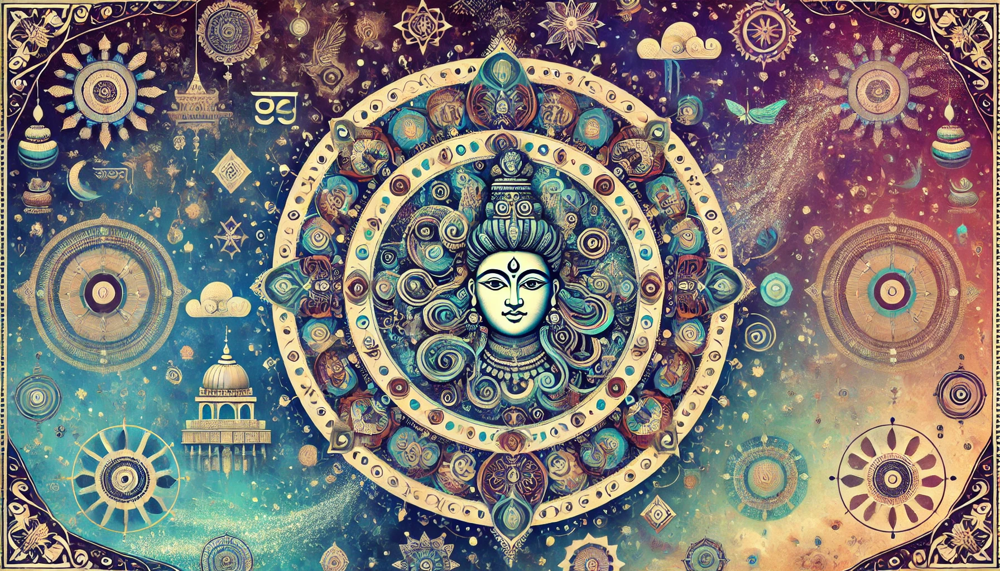
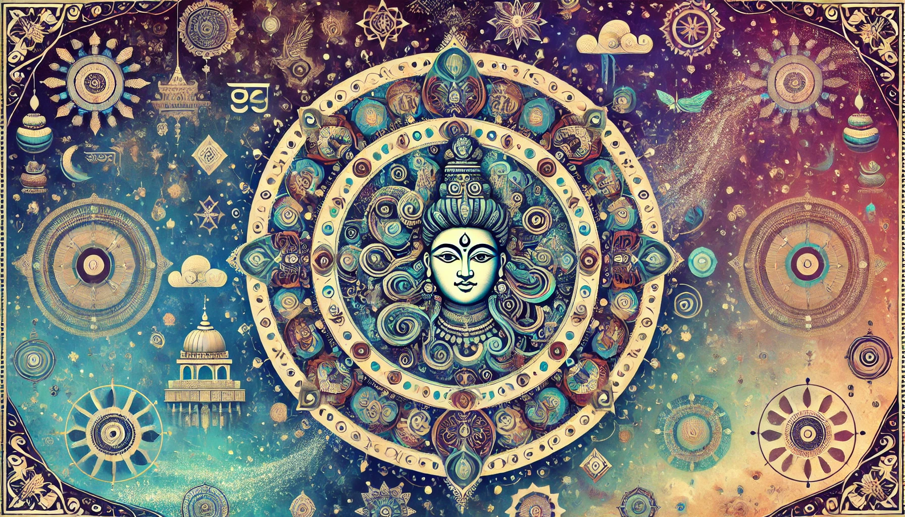

Lass die Sorgen los und tauche in die Welt der Astrologie ein.
Erstelle dein persönliches Horoskop, und du wirst vieles über dich selbst besser verstehen. Bei Fragen kannst du dich gerne an einen erfahrenen Astrologen wenden, frag mich zum Beispiel.
dein persönliches Horoskop
Nakshatra Bharani
Nakshatra Bharani (die 2. von 27 Nakshatras, 13° 20′ – 26° 40′ des Widders) besteht aus drei schwachen Sternen, die östlich von Ashwini liegen und ein Dreieck im Sternbild des Widders bilden. Bharani ist ein manushya, ein „irdischer“ Stern mit ungünstiger Natur, der einschränkenden und beschränkenden Einfluss ausübt. Menschen, die unter diesem Stern geboren sind, führen oft ein Leben voller Kampf und Leid. Die Nakshatra Bharani wird von Yamaraja, dem Gott des Todes und der Gerechtigkeit, beherrscht.
„Die furchterregende Bharani hat den Kopf eines Elefanten und einen Körper von der Farbe des Kollyriums. Sie trägt rote Kleidung, reitet auf einem Büffel und hält in den Händen einen Stab und eine Schlinge.“ (aus „Chaturvarga-Chintamani“ von Hemadri)
Bharani steht für Geburt, Kampf, verborgene Ereignisse und Herausforderungen. Das Wesen und die Handlungsweise von Bharani lassen sich mit einem Wort beschreiben: Extreme. Sie schwankt zwischen Puritanismus und Boheme, Naivität und Weisheit, Reife und Kindlichkeit, Leben und Tod. Bharani ist die "durstigste" Nakshatra. Diejenigen, die unter diesem Einfluss stehen, handeln oft instinktiv und möchten alles um sich herum erforschen, sei es Dinge, Menschen oder Orte, und das mit kindlicher Unmittelbarkeit. Diese kindliche Art, die beim Forschen und Lernen von Vorteil ist, kann jedoch auch in ungeahnte Grausamkeit umschlagen. Der Grund dafür ist ein Mangel an Verantwortung für ihre Handlungen.
Die Emotionen und Wünsche von Bharani-Persönlichkeiten sind oft so stark, dass nur wenige in der Lage sind, sie zu unterdrücken oder zu beruhigen. Diejenigen, die sich auf einem hohen Entwicklungsniveau befinden, richten ihre enorme Energie auf positive und nützliche Aktivitäten. Weniger entwickelte Menschen ähneln einem Mottenflug und springen wahllos von einer Lichtquelle zur nächsten. In der heutigen chaotischen Ära ist es sehr schwierig, das Potenzial von Bharani richtig zu entfalten.
Diese Nakshatra zeigt ein starkes Bedürfnis nach Kreativität. Bei Frauen äußert sich dies oft in der Geburt von Kindern, während Männer ihre Kreativität auf andere Weise verwirklichen.
In Bharani interagieren männliche und weibliche Energien, was sie zu einer der sexuellsten Nakshatras macht. Sie ist leidenschaftlich und verliebt und verkörpert die Natur selbst, die Anziehung zwischen Gegensätzen schafft. Allerdings versteht der entwickelte Typus der Bharani-Geborenen, dass diese Anziehung mehr mit Liebe, Harmonie und bewusster Einheit als mit Physiologie zu tun hat.
Normalerweise sind Bharani-Geborene energiegeladen, voller Enthusiasmus und Abenteuerlust. Sie erreichen ihr Ziel oft nur unter der ständigen Führung einer reifen und weisen Person. Menschen, die unter diesem Einfluss geboren sind, sind oft Pioniere in ihrem Bereich. Sie scheuen keine Schwierigkeiten, streben danach, in jeder Gruppe eine Führungsrolle zu übernehmen, besitzen einen starken Charakter und sind in der Lage, den Wechselfällen des Schicksals zu widerstehen. Sie können ruhig erscheinen, auch wenn sie innerlich zerrissen sind. Aufgrund der Ablehnung fremder Entscheidungen und Ansichten verlieren sie oft die Unterstützung ihrer Mitmenschen. Sie sind ziemlich egozentrisch und intolerant gegenüber anderen Meinungen.
Bharani verleiht einem Menschen eine erhöhte Sensibilität. Sie bemerken kleinste Anzeichen von Güte und Fürsorge, aber gleichzeitig fällt es ihnen schwer, Beleidigungen zu vergeben. Oft sind sie unruhig, ungeduldig und tolerieren keine Menschen oder Dinge, die ihren Idealen nicht entsprechen. Sie leben in ihrer eigenen Welt und streben danach, das Paradies auf Erden zu erschaffen.
Das Prinzip, alles bis zum Äußersten zu treiben, ist die Hauptschwäche von Bharani. Wenn sie Yoga praktizieren, werden sie strenge Asketen, wenn sie sich jedoch den Freuden hingeben, die sie sehr schätzen, kennen sie auch in diesem Bereich keine Grenzen.
Dies ist ein Stern, der Selbstbeherrschung, Kontrolle und Disziplin lehrt. Die Nakshatra ist hervorragend für Meditation geeignet. Menschen mit einem stark ausgeprägten Bharani könnten im Leben wichtige Dinge verlieren, um die Illusion der Materie in dieser Welt zu erfahren. Menschen mit einem starken Mond sind in der Lage, Krisen in ihrem Leben zu überstehen und etwas Neues und Positives aus den Krisen zu schaffen. Ist der Mond schwach, so kann die Person den Neigungen ihres Geistes nachgeben, was zur Niedergeschlagenheit führen kann. Eigenschaften wie Ungeduld, Groll, Verurteilung anderer, Arroganz, Stolz, extreme Handlungen und Verschlossenheit können bei Menschen mit dieser Nakshatra auftreten. Bharani im 1. Haus kann Stolz, Stärke, wenig Kinder und ein langes Leben bringen. Sind Venus und Mars stark, könnte dies zum Wohlstand beitragen.
Mystik der Sterne
Die Geheimnisse des Zodiaks
Männer-Bharani
Männer, die unter der Nakshatra Bharani geboren sind, haben oft eine durchschnittliche Körpergröße. Auffällige Merkmale sind leuchtende Augen und eine breite Stirn; beim Lächeln zeigen sie gesunde, schöne Zähne. Ihr Gesicht kann eine rötliche Färbung aufweisen. Wird der Horoskopeigentümer am Mittag geboren, könnte seine Körpergröße deutlich überdurchschnittlich sein.
Männer, die unter dem Einfluss von Bharani geboren wurden, sind offenherzig und sagen geradeheraus, was sie denken, ohne Rücksicht darauf, wie es von anderen wahrgenommen wird, was häufig zu Missfallen führt. Sie sind ehrlich und handeln niemals gegen ihr Gewissen. Oft geraten sie wegen Kleinigkeiten mit nahestehenden Personen in Streit; sie sind taktlos und hochmütig. Sie verfügen in der Regel über eine gute Ausbildung und besitzen Führungsqualitäten sowie einen Hang zum Wettkampf. Ihr Leben ist von Höhen und Tiefen geprägt. Sie haben ein Faible für Sport, Autos und besitzen kommerzielle Fähigkeiten. Sie könnten hervorragende Chirurgen oder Richter werden. Häufige Veränderungen im Leben führen dazu, dass keine langen schlechten oder guten Perioden vorhanden sind, wobei Erfolg und Glück meist nach dem 33. Lebensjahr eintreten und positive Veränderungen erkennbar werden.
Männer-Bharani heiraten normalerweise im Alter von etwa 27 Jahren. Ihre Partnerin ist attraktiv und zudem eine ausgezeichnete Hausfrau. Es besteht die Möglichkeit von Gesundheitsproblemen wie Gehirnerkrankungen, Kopfschmerzen, Fieber oder Epilepsie. Es gibt eine Gefahr im Zusammenhang mit Wasser.
Eine Geburt im ersten oder zweiten Viertel der Bharani-Nakshatra weist auf eine potenzielle Gefahr für den Vater hin.
Frauen-Bharani
Das auffälligste Merkmal im Erscheinungsbild von Frauen, die unter der Nakshatra Bharani geboren sind, ist ihre schöne Figur. Sie sind bescheiden und anziehend, sowie sehr selbstständig. Ihr ausgeprägter Wille und ihre Unabhängigkeit hindern sie daran, Ratschläge von anderen anzunehmen, und ihr Selbstbewusstsein verleiht ihnen die Fähigkeit, sich selbst zu versorgen. Sie verwirklichen ihre Träume und Ideen eigenständig und finden Wege, um ihre Ziele persönlich zu erreichen. Diese Fähigkeiten führen oft zu beruflichem Erfolg.
Sie respektieren ihre Älteren und Eltern und übernehmen in der Familie oft die Führungsrolle. Frauen-Bharani unterwerfen sich nur einem starken Mann, den sie bewundern; schwächere Männer werden von ihnen dominiert. Wenn der Partner weniger durchsetzungsstark ist, neigt die Bharani-Frau dazu, die führende Position in der Beziehung einzunehmen. Aufgrund ihrer leicht aggressiven Art sollte ihr Ehemann geduldig und nachsichtig sein.
Frauen-Bharani verfügen in der Regel über eine robuste Gesundheit.
Eine Geburt im ersten oder zweiten Viertel der Bharani-Nakshatra weist auf eine potenzielle Gefahr für die Mutter hin.
Die Padas (Viertel) der Nakshatra Bharani
Pada
Gradbereich
Beschreibung
Erste Pada
13°20′ – 16°40′ des Widders
Diese Pada fällt in die Navamsa des Löwen, regiert von der Sonne. Sie betont Kreativität und Selbstbezogenheit – Planeten in dieser Pada können die Aufmerksamkeit auf sich selbst richten. Enthusiasmus und Willenskraft können auf positive Ziele gerichtet werden, wenn der Nativ dazu geneigt ist. Die stärksten Planeten in dieser Pada sind Sonne, Mars und Jupiter.
Zweite Pada
16°40′ – 20°00′ des Widders
Diese Pada fällt in die Navamsa der Jungfrau, regiert von Merkur. Das Hauptmerkmal dieser Pada ist ein Geist des Dienens und eine gewisse Organisationsfähigkeit. Merkur, Mars und Rahu erzielen gute Ergebnisse hier.
Dritte Pada
20°00′ – 23°20′ des Widders
Diese Pada fällt in die Navamsa der Waage, regiert von Venus. Sie zeichnet sich durch die Fähigkeit aus, Gegensätze zu harmonisieren, und lehnt Einschränkungen in Beziehungen und Sexualität ab, was je nach Seelenreife positiv oder negativ zum Ausdruck kommen kann. Da diese Pada eine Pushkara-Navamsa ist, begünstigt sie die Erfüllung der Wünsche des Nativs. Merkur, Venus und Rahu nutzen die Energien dieser Pada am besten.
Vierte Pada
23°20′ – 26°40′ des Widders
Diese Pada fällt in die Navamsa des Skorpions, regiert von Mars. Ihre Energie ist in jeder Hinsicht extrem. Planeten hier zeigen unkontrollierbare Eigenschaften. Sonne, Mars und Ketu sind stark, aber nicht immer positiv. Nur Jupiter und Venus können dem Nativ helfen, das Potenzial dieser Pada weise zu nutzen und sich selbst nicht zu schaden.
Berühmte Bharanis: Sigmund Freud, Jack Nicholson, Saddam Hussein
„Der Mond in Bharani bringt Erfolg im Beruf, Wahrhaftigkeit, Gesundheit und Glück“ (Varahamihira).
Merkmale wie Attraktivität, Charisma, Führungsqualitäten, Zielstrebigkeit, Professionalität und eine herausragende Präsenz im öffentlichen Leben sind typisch. Menschen mit dem Mond in Bharani haben meist eine gute Gesundheit und ein Interesse an okkultem Wissen. Sie finden oft Erfolg im Bereich des Schreibens und der Verlagsbranche, und ihr Leben verbessert sich deutlich nach dem 33. Lebensjahr.
Einfluss der Aspekte auf den Mond in Bharani
Aspektierender Planet
Einfluss
Sonne
Erhöht die Neigung zur Härte. Wenn der Mond verbrannt ist, könnte dies zu gerichtlichen Auseinandersetzungen führen.
Mars
Gefahr durch Feuer, mögliche Vergiftungen und Augenkrankheiten. Materielle Abhängigkeit von anderen könnte auftreten.
Merkur
Fördert Wissen, Respekt von anderen und Wohlstand.
Venus
Eine gute Ehefrau und Kinder, glückliches Leben.
Saturn
Schwache Gesundheit und eine Tendenz zur Härte.
Mond in den Vierteln der Nakshatra Bharani
Pada
Gradbereich
Einfluss
Erste Pada
13°20′ – 16°40′ des Widders
Reichtum, Beharrlichkeit, Mut und ein starkes Temperament. Neigt dazu, nicht an die Zukunft zu denken und könnte Vermögen durch unkluge Investitionen verlieren.
Zweite Pada
16°40′ – 20°00′ des Widders
Gute Bildung, Glück, Intelligenz und eine religiöse Neigung.
Dritte Pada
20°00′ – 23°20′ des Widders
Ausgeglichenheit, Hilfsbereitschaft, Respekt von anderen und Stolz. Möglichkeit von zwei Ehen.
Vierte Pada
23°20′ – 26°40′ des Widders
Geheimnisvoller, ungewöhnlicher Charakter. Stolz, Sturheit, Mut und eine oft negative Einstellung gegenüber anderen.
Berühmte Persönlichkeiten mit dem Mond in Bharani: Carl Gustav Jung, Karl Marx, Elton John, Oliver Stone, Edgar Cayce, James Braha, Carlos Castaneda, Monica Lewinsky
Sonne in der Nakshatra Bharani
Die Sonne in Bharani verleiht Intelligenz, Taktgefühl, Ruhm, Respekt von anderen, Wohlstand und Kreativität. Allerdings können Probleme mit Wut, Stolz und Kampfbereitschaft auftreten.
Einfluss der Aspekte auf die Sonne in Bharani
Aspektierender Planet
Einfluss
Mond
Fördert Güte und Hilfsbereitschaft.
Mars
Neigung zur Härte und Materialismus.
Jupiter
Bringt Wohlstand und eine hohe gesellschaftliche Position.
Venus
Schwäche gegenüber dem anderen Geschlecht und Verrat durch Freunde.
Saturn
Schwache Gesundheit und Neigung zur Faulheit.
Sonne in den Vierteln der Nakshatra Bharani
Pada
Gradbereich und Geburtsdatum
Einfluss
Erste Pada
13°20’ – 16°40’ des Widders (28. April – 1. Mai)
Attraktivität, angenehme Umgangsformen, gute Bildung und Talent in der Astrologie. Position der Sonne zwischen 15 und 16 Grad im Widder bringt geschäftlichen Erfolg.
Zweite Pada
16°40’ – 20°00’ des Widders (2. – 5. Mai)
Liebesheirat, Familienglück, gute Kinder. Unerwarteter Wohlstand und Gewinne, mögliche Einnahmen aus Schifffahrt, Öl oder Meer. Zwischen 18 und 19 Grad im Widder könnten Geschlechtskrankheiten oder Katarakte auftreten.
Dritte Pada
20°00’ – 23°20’ des Widders (5. – 8. Mai)
Ungünstige Position für die Sonne, bringt Aggression, Überheblichkeit und Reizbarkeit. Bei Aspekt durch Mars mögliche Einkünfte durch Immobilien. Der Grad 20° im Widder gilt als destruktiv für die Sonne, was die Lebensdauer verringern oder viele Leiden bringen kann, wenn Venus keinen Aspekt auf diesen Grad hat. Personen mit diesen kritischen Graden sollten vorsichtig sein, wenn die erwähnten Planeten diese Punkte durchqueren.
Vierte Pada
23°20’ – 26°40’ des Widders (9. – 12. Mai)
Mögliches Leiden in der Kindheit, da der Vater früh verloren gehen könnte.
Mars in der Nakshatra Bharani
Wenn Mars in Bharani platziert ist, beeinflusst er das Leben des Besitzers mit Leidenschaft und Energie, aber auch mit Herausforderungen. Die Aspekte anderer Planeten auf Mars in dieser Nakshatra können verschiedene Auswirkungen haben:
Einfluss der Aspekte auf Mars in Bharani
Aspektierender Planet
Einfluss
Sonne
Respekt gegenüber Eltern, hoher Intellekt, angesehene Position und Wohlstand.
Mond
Dienst in der Polizei, Neigung zur Grausamkeit und Gefühlskälte, mögliche außereheliche Beziehungen.
Merkur
Neigung zum Diebstahl, Hang zur Selbstdarstellung, Affinität zu Frauen. Ohne Aspekt von Jupiter könnte der Besitzer berühmt als Dieb oder Schmuggler werden.
Jupiter
Führungsrolle in der Familie, Wohlstand, Neigung zu Wutausbrüchen.
Venus
Sozial nützliche Arbeit. Möglichkeit von außerehelichen Beziehungen, jedoch sind die Bemühungen auf das Wohl der Familie gerichtet.
Saturn
Kühle und feindselige Beziehungen zur Familie, Mangel an Mutterliebe.
Mars in den Vierteln der Nakshatra Bharani
Pada
Gradbereich
Einfluss
Erste Pada
13°20’ – 16°40’ des Widders
Gefahr durch scharfe Gegenstände und Klingen. Es wird empfohlen, keine Fahrzeuge selbst zu steuern. Der Tod könnte im Ausland durch eine plötzliche Krankheit im Alter von 50 Jahren eintreten.
Zweite Pada
16°40’ – 20°00’ des Widders
Möglichkeit von Leukodermie oder Allergien. Trotz schwacher Gesundheit wird der Besitzer des Horoskops hart arbeiten und Anerkennung erreichen, möglicherweise als Sportler oder im Geschäft mit Silber oder Edelstahl. Neigung zu Frauen und Gefahr von Geschlechtskrankheiten. Der zerstörerische Grad für Mars ist 19° im Widder, was die Lebensdauer verkürzen oder Leiden bringen kann, wenn kein Venus-Aspekt vorhanden ist.
Dritte Pada
20°00’ – 23°20’ des Widders
Diese Position bringt Armut und Misserfolge bis zum Alter von 50 Jahren, danach jedoch Erfolg. Der Horoskopeigner wird Immobilien im Unterhaltungssektor besitzen und ein komfortables Leben bis zum Alter von 85 Jahren führen.
Vierte Pada
23°20’ – 26°40’ des Widders
Personen mit Mars in dieser Pada erreichen eine hohe Position in ihrem Heimatland, sollten jedoch im Ausland vorsichtig sein, da der Tod durch einen Unfall im Ausland eintreten könnte. Der Horoskopeigner könnte ein erfahrener Arzt werden, der sich auf Geschlechtskrankheiten spezialisiert.
Berühmte Persönlichkeiten mit Mars in Bharani: (Beispiel einfügen)
Merkur in der Nakshatra Bharani
Merkur in Bharani bringt kommunikative und intellektuelle Fähigkeiten, die je nach Aspekt des jeweiligen Planeten verschiedene Auswirkungen haben können. Die Aspekte der anderen Planeten beeinflussen den Ausdruck und die Richtung der Merkmale von Merkur in Bharani:
Einfluss der Aspekte auf Merkur in Bharani
Aspektierender Planet
Einfluss
Mond
Musikalische, künstlerische oder schauspielerische Fähigkeiten, Erfolg und Gewinne in diesen Bereichen, Besitz von Fahrzeugen, einem guten Haus und Dienern.
Mars
Streitlustigkeit und Kontakte zu hochrangigen Persönlichkeiten.
Jupiter
Glück, eine gute Ehefrau und Kinder.
Venus
Tugendhaftigkeit, die Zuneigung anderer und das Leben in schöner Gesellschaft.
Saturn
Neigung zur Grausamkeit, niedrige Moral und Streitsucht.
Merkur in den Vierteln der Nakshatra Bharani
Pada
Gradbereich
Einfluss
Erste Pada
13°20’ – 16°40’ des Widders
Kurze Lebensdauer, möglicherweise Tod im Kindesalter. Bei neutralisierenden Aspekten jedoch sehr langes Leben. Der Besitzer verdient seinen Lebensunterhalt als Bauarbeiter oder Mechaniker und widmet seine freie Zeit dem Schreiben und Forschen. Der zerstörerische Grad für Merkur ist 15° im Widder. Planeten in zerstörerischen Graden können die Lebensdauer verringern oder Leiden bringen, wenn kein Venus-Aspekt vorhanden ist.
Zweite Pada
16°40’ – 20°00’ des Widders
Mittlere Lebensdauer. Der Horoskopeigner versucht, mehrere Aufgaben gleichzeitig zu bewältigen, erzielt jedoch oft keine guten Ergebnisse. Er ist freundlich und hilfsbereit, hat jedoch schwierige Beziehungen zu seinem Vater. Der zerstörerische Grad für Jupiter in dieser Pada ist 19° im Widder.
Dritte Pada
20°00’ – 23°20’ des Widders
Langes Leben. Der Besitzer verdient seinen Lebensunterhalt als Bauarbeiter oder Mechaniker. Seine Ehefrau ist ein wahrer Segen und zeichnet sich durch Anpassungsfähigkeit und einen herausragenden Charakter aus.
Vierte Pada
23°20’ – 26°40’ des Widders
Der Horoskopeigner kann ein Regierungsbeamter werden und genießt das Leben bis zum 45. Lebensjahr, wonach sein Lebensstandard moderat wird. Eine Narbe von einer Verletzung oder Operation wird auf seinem Körper zu sehen sein.
Jupiter in der Nakshatra Bharani
Jupiter in Bharani bringt oft Weisheit und gesellschaftliches Ansehen, jedoch variieren die Auswirkungen stark je nach Aspekt der anderen Planeten:
Einfluss der Aspekte auf Jupiter in Bharani
Aspektierender Planet
Einfluss
Sonne
Fördert Wahrhaftigkeit, Glück, Ruhm und großes gesellschaftliches Engagement.
Mond
Respekt gegenüber Älteren, Tugendhaftigkeit und Anerkennung in der Gesellschaft.
Mars
Tendenz zur Grausamkeit und Verschwendung.
Merkur
Neigung zur Unwahrheit, Streitsucht und mehreren romantischen Verbindungen gleichzeitig.
Venus
Besitz von Schmuck, Fahrzeugen, einem schönen Zuhause und Dienern, sowie Gesellschaft anmutiger Frauen.
Saturn
Härte, Mangel an Glück in der Ehe und mit Kindern. Es wird geraten, seine Ratschläge zu meiden, da sie oft zu negativen Ergebnissen führen.
Jupiter in den Vierteln der Nakshatra Bharani
Pada
Gradbereich
Einfluss
Erste Pada
13°20’ – 16°40’ des Widders
Wahrhaftigkeit, gute Redekunst, unerschütterlicher Autorität und Liebe sowie Respekt von anderen. Der Horoskopeigner liebt seinen Vater sehr und könnte die Leitung eines Unternehmens oder einer Bank übernehmen. Es besteht die Möglichkeit auf mehr als eine Ehe und das Risiko von Meningitis oder anderen hirnbezogenen Erkrankungen.
Zweite Pada
16°40’ – 20°00’ des Widders
Religiöse Neigung, große Familie und Einkommen durch Besitz von Immobilien oder Unterhaltungseinrichtungen. Traditionelle Texte weisen darauf hin, dass der Horoskopeigner ein Lebensalter von 55 Jahren erreichen könnte.
Dritte Pada
20°00’ – 23°20’ des Widders
Viele Reisen, Glück und Wohlstand ab dem 32. Lebensjahr, Erfolg im Wettbewerb und Genussfreude. Der Horoskopeigner entgeht mehrmals auf wundersame Weise dem Tod und könnte Jurist, Experte, Juwelier oder Sportler werden.
Vierte Pada
23°20′ – 26°40′ des Widders
Neigung zur List und Ausbeutung anderer. Dennoch könnte der Horoskopeigner ein vollendeter Tantriker werden oder Siddhi in Mantra erlangen.
Venus in der Nakshatra Bharani
Venus in Bharani bringt häufig Schönheit, Anziehungskraft und Neigung zu Genuss, aber die Auswirkungen können je nach Aspekt der anderen Planeten stark variieren:
Einfluss der Aspekte auf Venus in Bharani
Aspektierender Planet
Einfluss
Sonne (in der Navamsa)
Exzellente organisatorische Fähigkeiten und Anerkennung durch die Regierung. Viele Leiden aufgrund des Verhaltens der Ehefrau.
Mond
Hohes gesellschaftliches Ansehen, jedoch starke Kritik aufgrund außerehelicher Beziehungen.
Mars
Unterdrückte Persönlichkeit, Mangel an Wohlstand, Respekt und familiärer Harmonie.
Merkur
Viele Hindernisse und Unzufriedenheit im Leben.
Jupiter
Attraktive Erscheinung und familiäres Glück.
Saturn
Autorität, Respekt und erhebliche finanzielle Mittel, die jedoch oft auf ungesetzlichem Weg erworben wurden.
Venus in den Vierteln der Nakshatra Bharani
Pada
Gradbereich
Einfluss
Erste Pada
13°20’ – 16°40’ des Widders
Der Horoskopeigner hat eine Narbe über dem Auge, ist redegewandt, asketisch, jedoch leidenschaftlicher Raucher. Er ist sportbegeistert, genussfreudig, verdient seinen Lebensunterhalt durch den Handel mit Musikinstrumenten und könnte ein geschickter Musiker werden.
Zweite Pada
16°40’ – 20°00’ des Widders
Möglichkeit einer Narbe oder eines Mals über den Augen, schlechtes Sehvermögen. Der Horoskopeigner neigt stark zu Frauen und könnte an Geschlechtskrankheiten leiden. Er könnte ein herausragender Frauenarzt werden.
Dritte Pada
20°00’ – 23°20’ des Widders
Auch hier sind Verletzungen oder Narben in der Nähe der Augen möglich. Der Besitzer ist kleinwüchsig, kräftig gebaut und im Werbegeschäft tätig. Seine Ehefrau wird außergewöhnlich schön sein.
Vierte Pada
23°20’ – 26°40’ des Widders
Leben im Ausland. Laut klassischen Texten wird der Horoskopeigner zum Priester (Pujari) im Tempel, der von den Gaben der Gläubigen lebt. Im modernen westlichen Kontext könnte er hohes Ansehen genießen und von anderen finanziell unterstützt werden oder ein gutes Erbe erhalten.
Saturn in der Nakshatra Bharani
Saturn in Bharani bringt oft Herausforderungen und Entschlossenheit, wobei die Wirkung je nach Aspekt der anderen Planeten unterschiedliche Ergebnisse haben kann:
Einfluss der Aspekte auf Saturn in Bharani
Aspektierender Planet
Einfluss
Sonne
Sozial nützliche Arbeit und Einkommen aus Rinderhaltung oder Landwirtschaft.
Mond
Armut, Härte und Neigung zu schlechten Taten.
Mars
Schwacher Charakter, niedrige Moral und viele Hindernisse im Leben.
Merkur
Neigung zur Unwahrheit, Diebstahl und mangelnder Erfolg beim anderen Geschlecht.
Jupiter
Hohe Position in der Politik, Wohlstand, Besitz von Fahrzeugen, Häusern und Dienern.
Venus
Viele Geschäftsreisen, Neigung zu Frauen, hohe sexuelle Energie, aber unattraktives Aussehen.
Saturn in den Vierteln der Nakshatra Bharani
Pada
Gradbereich
Einfluss
Erste Pada
13°20’ – 16°40’ des Widders
Der Horoskopeigner leidet unter starken Kopfschmerzen und könnte eine Operation am Kopf benötigen. Er wird sich für religiöse Studien interessieren und erhält Ehre und Respekt von bekannten Persönlichkeiten sowie erheblichen Reichtum durch seine Forschungen.
Zweite Pada
16°40’ – 20°00’ des Widders
Diese Position bringt Glück und große Weisheit, jedoch mangelnde Konsequenz in den Handlungen. Der Horoskopeigner könnte ein Regierungsberater werden. Es können Schlaflosigkeit, Furunkel und andere entzündliche Erkrankungen auftreten. In einem weiblichen Horoskop kann dies auf Menstruationsstörungen und Abtreibungen hindeuten.
Dritte Pada
20°00’ – 23°20’ des Widders
Frühe Trennung oder Tod eines Elternteils und Erziehung durch Stiefmutter oder Stiefvater.
Vierte Pada
23°20’ – 26°40’ des Widders
Mögliches Ableben des Vaters oder der Mutter und Erziehung durch Stiefeltern. Abhängiges Leben bis zum Alter von 35 Jahren, danach eventuell Dienst in der Armee oder Polizei. Wenn Mars Saturn in dieser Pada aspektiert, könnte der Horoskopeigner zu einem Dieb oder Terroristen werden.
Mystik der Sterne
Die Geheimnisse des Zodiaks
Funktioniert Prashna-Horoskop wirklich?
Absolut! Jede Frage, die gestellt wird, hat eine tiefere kosmische Bedeutung. Im Moment der Fragestellung sind die Planeten so positioniert, dass sie genau das widerspiegeln, was gerade gebraucht wird. Prashna nutzt diese Synchronizität, um eine klare Antwort zu geben – es ist, als würde das Universum direkt sprechen.
Wie genau sind die Antworten?
Die Genauigkeit ist oft verblüffend! Die erstellte Karte zeigt genau die Energien, die umgeben und die aktuelle Situation beeinflussen. Viele Menschen sind überrascht, wie direkt Prashna den Kern ihrer Fragen trifft – ob es um Liebe, Beruf oder persönliche Entscheidungen geht.
Braucht man das Geburtshoroskop dafür?
Nein, für Prashna braucht es keine Geburtsdaten. Alles, was zählt, ist der Moment der Frage. Dieser Moment enthält bereits alle Antworten, um Klarheit zu schaffen. Natürlich kann das Geburtshoroskop zusätzliche Einblicke geben, aber Prashna ist perfekt für den aktuellen Moment und gibt präzise Antworten ohne Geburtsinformationen.
Kann man es einfach ausprobieren?
Natürlich! Selbst wenn die Frage "einfach so" gestellt wird, gibt es immer einen tieferen Grund dafür. Wenn die Frage auftaucht, ist es genau der richtige Moment, sie zu stellen. Prashna zeigt, was der Kosmos im Augenblick bereit hat – die Antwort könnte überraschen!
Prashna
Deine persönliche Frage
Nutzen der Prashna-Astrologie
Schnelle Einsicht
Antworten im Moment
Sofort verfügbar
Prashna-Astrologie ist eine vedische Methode, die das Stellen von Fragen und das Erhalten präziser Antworten anhand der Planetenkonstellationen zum Zeitpunkt der Frage ermöglicht.
Analyse der Prashna-Astrologie
Deutung des Aszendenten
Präzise Analyse
In der Prashna-Astrologie wird der Aszendent (Lagna) analysiert, um den Verlauf einer Situation zu verstehen. Der Lagnesh, also der Herrscher des Aszendenten, liefert durch seine Stellung im Zeichen und im Haus wichtige Hinweise auf den Ausgang der Frage. Aspekte anderer Planeten und ihre Einflüsse auf den Lagnesh ermöglichen es dem Astrologen, präzise Vorhersagen zu treffen und fundierte Schlussfolgerungen zu ziehen.
Grundlagen der Prashna-Astrologie
Astrologische Software
Präzise Berechnung der Prashna
Jetzt ausprobieren
Vor dir steht eine astrologische Software, die es ermöglicht, Prashna-Astrologie völlig präzise zu berechnen. Du kannst dich selbst ausprobieren und sehen, wie großartig diese Methode ist, indem du Fragen stellst und ihre Genauigkeit überprüfst.
Aspekte und Häuser
Wichtige Planetenaspekte
Genauer Einblick
Die Aspekte der Planeten auf den Lagnesh sowie ihre Position in den Häusern liefern tiefgehende Einsichten in die Natur der Frage. Diese Analyse zeigt, welche planetarischen Energien die Situation unterstützen oder behindern. Der Zustand des Lagnesh, seine Würde und die Aspekte, die auf ihn einwirken, sind entscheidend für das Verständnis der Fragestellung.
Janma Patrika
Hauptbestandteile - Geburtsdetails
Erstellung
Panchang
detaillierte Informationen
astrologischer Almanach
Ein Panchang ist ein wichtiger astrologischer Kalender in der vedischen Astrologie, der detaillierte Informationen über astronomische und astrologische Aspekte eines bestimmten Tages liefert.
Insgesamt ist der Panchang ein komplexes und vielseitiges Instrument, das tief in der indischen Kultur und Astrologie verwurzelt ist und auch heute noch von vielen Menschen für die Planung und Orientierung im Alltag genutzt wird.
Lagna-Diagramm
Aszendent-Diagramm
Interpretation
Das Lagna und seine Position in einem bestimmten Rashi (Tierkreiszeichen) und Nakshatra (Mondhaus) geben Aufschluss über verschiedene Aspekte des Lebens
Der Lagna-Herrscher (der Planet, der das Zeichen des Aszendenten regiert) spielt ebenfalls eine wichtige Rolle in der Interpretation
Es dient als Grundlage für die Erstellung anderer wichtiger Diagramme wie das Navamsa-Diagramm.
Entwicklung
Rasi Diagramm
Janma Rashi / Geburts-Rashi
Definition und Bedeutung
Das Rasi-Diagramm zeigt die Position der Planeten in den zwölf Tierkreiszeichen (Rashis) zum Zeitpunkt der Geburt.
Es wird auch als Mond-Diagramm bezeichnet, da es auf der Position des Mondes basiert.
Die Positionen der Planeten in den verschiedenen Häusern und ihre Beziehungen zueinander werden analysiert.
Besondere Aufmerksamkeit gilt dem Haus, in dem sich der Mond befindet, da es als Geburts-Rashi gilt.
Navamsa Diagramm
D9-Diagramm
spiritueller Entwicklung
Das Navamsa-Diagramm wird oft als "Frucht" des Geburtshoroskops bezeichnet.
Es gibt Aufschluss über die Qualität und Stärke der Planetenpositionen im Geburtshoroskop.
Besonders wichtig ist es für die Analyse von Ehe und Partnerschaft.
Es wird auch zur Beurteilung der spirituellen Entwicklung und des Karmas einer Person herangezogen.
Kontakt aufnehmen
Ich freue mich, von dir zu hören. Ob du eine Frage zur Astrologie hast oder Hilfe brauchst, um die Ergebnisse deines Horoskops besser zu verstehen – schreib mir.

 



 
